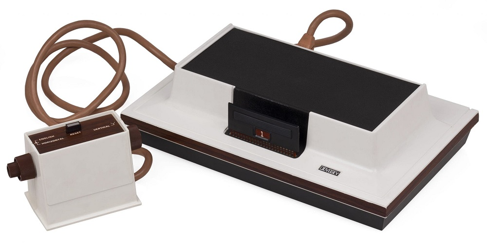
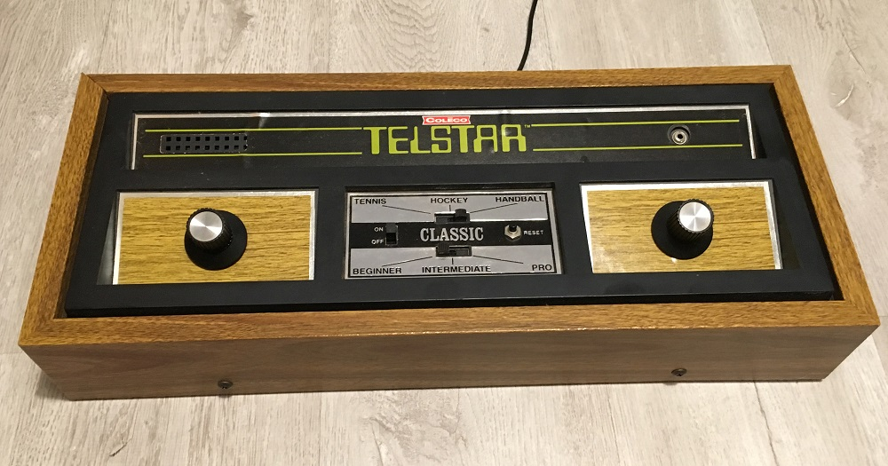
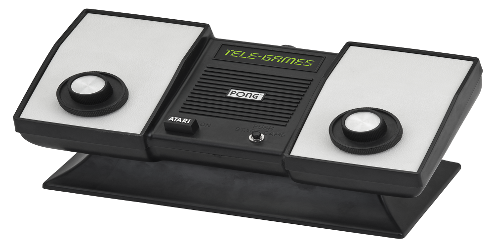

Primera Generación 1972 - 1976
Se lanza la primera videoconsola de sobremesa por la compañía electrónica Magnavox
Magnavox Odyssey
Fue la primera y única consola de esta generación en poseer dos mandos conectados con cables. También contaba con cartuchos intercambiables de diferentes juegos, la mayoría similares entre sí.
TV TennisElectrotennis
Es una consola de videojuegos doméstica de primera generación dedicada que fue realizada por Epoch Co en cooperación con Magnavox. Se lanzó varios meses antes del lanzamiento de Home Pong en América del Norte. Una característica única del TV Tennis Electrotennis es que la consola está conectada inalambricamente a una televisión, funcionando a través de una antena UHF

coleco telstar
El 'Telstar' es una serie de consolas de videojuegos producida por Coleco. La amplia gama de productos y el inminente desvanecimiento de las máquinas "Pong" llevaron a Coleco a enfrentar la bancarrota en 1980
COLOR TV-Game
Es la primera consola de videojuegos de Nintendo, y una serie de cinco consolas dedicadas para el hogar, creadas por la compañía ya mencionada, y lanzadas exclusivamente en Japón. La consola sólo duró 3 años en el mercado, habiéndose descontinuado en 1983.

Atari Pong
Fue una consola creada por Atari en 1975, y la segunda videoconsola de la historia. Fue la versión doméstica de la arcade PONG también lanzada por atari unos años antes. No llevaba cartuchos, sino que tenía solo un juego.
